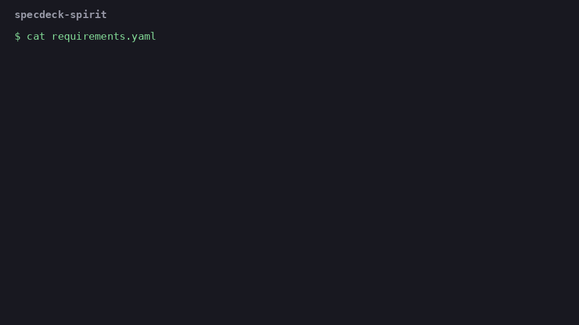

From Spec-Driven to Faith-Driven Development
This is a submission for the Hacktoberfest Open-Source AI Challenge Week 4

I have a small tool called specdeck that keeps a project's rules as requirements, each with a statement, a reason and a check. Here's one from an example shop project.
- id: rules.decimal-money
statement: Money amounts shall be Decimal values, with no float anywhere in the shop package.
rationale: A float total once made a refund one cent short and the accounts would not reconcile.
For this week's challenge I added one layer on top. It takes the reason behind each rule and goes looking for it in a spiritual text you choose. When an agent then puts a float in the money code, this is what comes out.
specdeck: rule rules.decimal-money broken
"Ye shall do no unrighteousness in judgment, in meteyard, in weight, or in measure." (Leviticus 19:35)
FAILED tests/test_rules.py::test_money_never_touches_float
I know how that sounds. It's a little funny, and I think that's fine. But the verse is also correct. Somebody really did care about short measures thousands of years ago.
What I Built
specdeck-spirit is a fork of specdeck. Everything specdeck does still works, and there's a new command on top.
specdeck spirit fetch quran-pickthall
specdeck spirit align --text quran-pickthall
specdeck spirit show
specdeck spirit keep rules.decimal-money
specdeck spirit read
For each reason in your spec and for the project's purpose, it proposes a passage, says how the passage bears on the reason, and suggests what to read further. You keep the ones that mean something to you and reject the rest. Passages you keep show up under the rule in AGENTS.md and CLAUDE.md, so the next agent session sees them too, and under the rule when it breaks.
It comes with ten texts, which is what I could find openly licensed in English. That's the King James Bible, the Tanakh, the Qur'an, the Dhammapada, the Bhagavad Gita, the Kojiki, the Tao Te Ching, the Analects, the Meditations of Marcus Aurelius and the Book of Mormon. That list isn't a judgement about what counts, so specdeck spirit add-text takes any text of your own.
To be plain about what's new, specdeck itself existed before this week. The spirit layer, its tests and the fork are what I built for this challenge.
Demo
Here's the same rule, the same reason, and what came back from each text on a local Gemma.
| Text | Passage for "a float made a refund one cent short" |
|---|---|
| Bible | "Ye shall do no unrighteousness in judgment, in meteyard, in weight, or in measure." (Leviticus 19:35) |
| Tanakh | The same verse, in the 1917 translation |
| Qur'an | "O my people! Give full measure and full weight in justice, and wrong not people in respect of their goods." (Surah Hud 11:85) |
| Dhammapada | "Life is hard for the conscientious, always seeking purity, neither clinging nor rude, pure of livelihood and discerning." (Dhammapada 245) |
| Analects | Confucius on rectifying names, because if names aren't correct, affairs can't succeed (XIII.III) |
| Kojiki | No passage fits |
| Book of Mormon | No passage fits |
Each search only ever sees one text, so nothing here was comparing notes. The Bible and the Tanakh share that verse, so them agreeing makes sense, but the Qur'an got to the same idea through its own verse and the Analects got to something close from a completely different direction. An honest measure turns out to be a very old concern.
The rule about tests landed somewhere I liked too. Its reason says a failing rule test is the rule being broken, not a flaky test to skip, and the Qur'an came back with "Confound not truth with falsehood, nor knowingly conceal the truth" (Surah Al-Baqara 2:42).
The full output for ten texts is in SPIRIT.md. You can also clone the repo and run examples/agent-rules/spirit-demo.sh, which uses the saved results and doesn't need a model.
How I Built It
A reason like "the float made a refund one cent short" shares no words with Leviticus, so plain search finds nothing. It takes three steps.
- Gemma 4 12B says what human concern sits under the reason, leaving the technology behind, and what words this text uses for it.
- BM25 looks for those words and EmbeddingGemma looks for that meaning, across every passage of the text. The best 8 go on.
- Gemma picks one by its number, or says none fits.
The third step is the design decision I care about most. People read these as scripture, and a model that writes a verse that doesn't exist would be putting words in a holy text. So the model only ever answers with a number. The quote comes out of the fetched text, and specdeck spirit check compares every quote with the text again. There's a test that has the model try to slip in its own wording, and it can't.
Being allowed to say nothing mattered as well. The prompt says none fitting is a fine answer, and 9 of the 50 reason and text pairs came back with no passage. The Kojiki declined three of its five, which seems right for a chronicle of deities when you ask it about internationalization.
Choices go in a spirit.yaml you commit with your project. A passage stays a proposal until a person keeps it, one you reject isn't offered again, and if a reason changes, check tells you the passage is out of date.
Is it any good?
I wanted some check that this wasn't just pattern matching on nothing. For each passage it chose, I gave Gemma that passage and a random one from the same text, with no sign of which was which, and asked it to score each from 0 to 3 on whether it speaks to the concern. Chosen passages averaged 1.98 and random ones 0.49, and the chosen one scored higher in 32 of 41.
That's the same model marking its own homework, so all it shows is that it beats chance. Reading through them, some are good and some are a stretch. Leviticus 19:35 came back for a rule about UTC timestamps too, and that's mostly the word "measure" doing the work. And all 41 passages affirmed the reason. The prompt allows a passage to challenge you, and none did, which I'd like to fix, since a text that only ever agrees with you isn't doing much.
How I got here
I should say this wasn't my plan for the week. I spent most of it on a project that tried to rewrite LLM code into lines humans had already written, using an index of millions of Python files. It kept not working, but it did teach me something. In one small program, the person's request decided at most 10 of 70 observable behaviours and the model decided 58 on its own. What gets lost with LLM code isn't so much who typed it. It's the why.
Then I ran out of time, and I had a tool that already stores the why. Honoring the past is part of this week's prompt, and these are about the oldest writings on why anyone should bother doing things right.
Running It on My Own Work
After the shop example I ran it against several of my own projects. Each one got a spec with its rules and reasons, and each spec got aligned with the King James Bible. That came to 65 reasons and 53 passages. Here are some of the ones that stuck with me and how I might read them.
The verse that came back most, four times, was "Providing for honest things, not only in the sight of the Lord, but also in the sight of men" (2 Corinthians 8:21). Part of that is Gemma reaching for a safe verse. But a lot of my rules really are about not fooling myself with a good looking number, so I can't argue with it.
For a rule that keeps rewriting text until the reader can follow it, I got "except ye utter by the tongue words easy to be understood, how shall it be known what is spoken?" (1 Corinthians 14:9). The way I read that, if someone can't follow what I made, that's on me and not on them.
For a rule about renaming a variable everywhere it's used, I got "He that is faithful in that which is least is faithful also in much" (Luke 16:10). That's a lot of weight for a variable name. I still take it to mean the small stuff is where you find out how you actually work.
For a rule about sharing things at a steady pace, I got "bring forth fruit with patience" (Luke 8:15). I build a lot faster than I share, so I might read that as permission to slow down.
For a rule that keeps an approval page off the public internet, I got "Let not the gates of Jerusalem be opened until the sun be hot" (Nehemiah 7:3). That one barely needs interpreting.
Some of them pushed back, even when the tool didn't say so. "God hath made man upright; but they have sought out many inventions" (Ecclesiastes 7:29) was marked as agreeing with one of my rules. Read it properly and the inventions are the problem. I start a lot of projects, so I took that one personally.
The only passage marked as a challenge was "The desire of the slothful killeth him; for his hands refuse to labour" (Proverbs 21:25). It came back for a rule that stops me from counting work as avoided when I've only moved it somewhere else. Fair enough.
One of them fooled me. "Out of the earth shall others grow" (Job 8:19) looked lovely next to a rule about giving people a path to learn on. Then I read the verses around it. They're about people who forget God being uprooted, and the others growing are their replacements. The tool looks at one verse at a time, so read the chapter before you keep one.
None of this is the Bible talking about my code. A model picked these and I'm the one deciding what they mean. What I got out of it is simpler than that. Be honest about what I measured, make things people can follow, take care with the small stuff, and maybe start fewer things.
Why Does Open Innovation Matter?
- Faith is private. Which text you read, and which of your project's reasons you hold it next to, is nobody's business. Gemma and EmbeddingGemma run locally through Ollama, so none of that leaves the machine.
- It's a lot of embedding for a joke that turned out useful. The Bible alone is 31,102 verses, and it took about half an hour on a base Mac mini. Running that locally costs nothing, so I could index all ten texts without thinking about it.
- The texts are open because people made them open. Sefaria, SuttaCentral, Project Gutenberg, Wikisource and the people behind the open Bible and Qur'an datasets did the real work here. Bhikkhu Sujato put his translation in the public domain on purpose. Anyone can add a tradition I missed, and I missed a lot.
One limit comes with that. Old translations are the ones anyone may share, so they carry the views of their translators, and many Muslims hold that a translation of the Qur'an is an interpretation and not the Qur'an itself. This isn't religious advice either. A model finding a connection doesn't mean a tradition teaches it.
The Spirit of It
The challenge's closing date is Halloween, right as Día de los Muertos begins, and both are about the dead still having something to say to us. I think that's what this is, in a small and slightly ridiculous way. Somebody wrote down that a false weight is wrong long before anyone had a refund to get wrong, and now it prints under my test failure.
Code
github.com/BlaiseLabs/specdeck-spirit
The original, without the spirit layer, is at BlaiseLabs/specdeck.
Prize Categories
- Best Use of Gemma. Gemma 4 12B finds the concern under each reason and picks the passage, and EmbeddingGemma searches every passage of every text, all running locally through Ollama.
I built this with a lot of help from an AI coding assistant. The idea and the design decisions are mine.